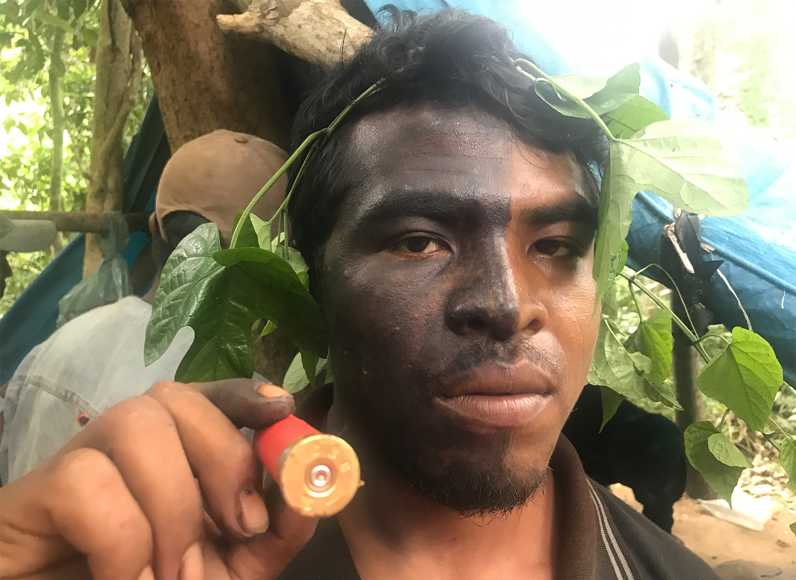

Capability of Drones for Humanitarian Purposes in Ukraine

The use of drones is undoubtedly a new development in warfare recently and has been incredibly highlighted in the war involving Ukraine and Russia. The immediate plan of action as it seems for both countries regarding drones has been to use it for what you may think - war purposes. The military of Ukraine has found them extremely useful already for years and years now. For the Russian military, it isn’t easy to shoot at a drone, and how would they know if a drone was about to hit their tank with an explosive if the crew are all huddled together on the inside. This has what has made them incredibly effective, they are small. Zelensky on December 19th of 2023 had declared that Ukraine will produce one million drones in 2024. The reason for such a high number is that often these drones are one time use as they often take a suicide course of action when engaging the enemy.
However, the use of drones has started to shift into humanitarian themed missions such as medical related missions and search and rescue operations. Well it most definitely has been successful. Drones like this have helped reduce response-times to emergencies, However, there are some unprecedented fallbacks with some humanitarian themed missions, especially with missions that involve the actual humans interacting with them, this interaction could be just a simple sight. It is incredibly difficult to tell So now the question remains, can these drones actually be used for humanitarian purposes effectively in war time, or is it too conflicted to be succesful for daring humanitarian missions?
Fighting Drone Distrust: Drone Killing Backpack
Imagine the following story: You are a Ukrainian medic who is running across a field with a group to save a wounded tank crew from the battlefield. An anti-tank missile hit the tank previously, and there are only three surviving crew members. As you are running to go save them, you see two drones circling above you in the sky. They fly with a vulture-like presence. All of a sudden, one of the drones makes a nose dive straight toward you. You see an explosive strapped to the drone, and you run as fast as you can to evade it. As it gets closer, it crashes to the ground with a large thud. However, you’re still alive. This is the reality for some Ukrianian soldiers with the invention of the KVERTUS AD COUNTER FPV BACKPACK.
With the advancement of the Russian military involving kamikaze drones to target Ukrainian soldiers and medics (and civilians at this point too), drone warfare is only becoming more and more severe in the region. The Ukrianian military has been utilizing FPV drones for both war and humanitarian purposes. The Russian military shortly after realized the potential of these drones and started to mirror Ukraine’s use of kamikaze drones, which had been largely difficult for Ukrainian soldiers to operate on the ground. But a solution was found when the Ukrainian company KVERTUS invented a backpack that could essentially fight off these drones. From what it looks like at first glance, it looks like a school backpack, but with sticks coming out the top. However, it is much more than just a school backpack, as it is now essentially an invisible shield that protects whoever is wearing it. At the request of the Ukrainian military, the company essentially came up with a backpack that blocks frequencies in the 850–940 MHz range. And we know that these kamikaze drones use the 850–940 MHz frequency range to operate. The backpack costs about 2,713 US dollars and has a blocking radius of 150 meters away from the backpack, given the condition that the UAV operator of the kamikaze drone is about 1500 meters away. The blocking radius really does depend on the terrain and how far the operator is from their drone, as the strength of the connection to a drone will be much stronger if they are closer. It is, in turn, harder to block a stronger connection. It has a battery life of 120 minutes. The concept behind the workings of the backpack is that it essentially sends out a large concentration of electromagnetic noise that disrupts the connection between the UAV operator and the UAV. This electromagnetic noise comes out in waves that essentially disrupt the frequency waves that are interacting with the drone. The connection gets severed, and the drone dissapears to the operator. Jamming technologies are all too common, but what makes this different is that this is mobile jamming technology for human use and it will save many Ukrainian soldiers as they continue defending their country.
The unsung heroes that are preventing climate change and environmental loss

From 2012 to 2022, at least 1,910 environmental defenders, meaning people advocating for environmental protection, were killed worldwide according to the Yale School of Environment. These are only the cases that have actually been reported and the reality is that this is the tip of the iceberg as there are many deaths of environmental defenders that go unnoticed and unreported. Just in 2022, 177 environmental activists were murdered, and interestingly, one-third of the victims were indigenous people. Through investigations, it has been most notably found that these killings were carried out by hitmen, organized crime groups, land invaders, companies, and sometimes even with government involvement. The countries that seem to be suffering the most with violence against environmental activists/defenders, are the Philippines, Colombia, India, Brazil, Guatemala, Mexico, and the DRC. The countries where these killings tend to happen such as the ones listed, are labeled as either flawed democracies or hybrid regimes. The violence inflicted toward these environmental defenders/activists does not just include murder. Methods of death threats, kidnappings, intimidation, forced disappearances, legal threats including criminalization (by both government and corporates), forced displacement, defamation, are all other forms of violence carried out against these environmental defenders/activists. Some cases of these killings have received worldwide attention, such as the killing of Dom Phillips and Bruno Pereira together, by reportedly a fisherman, and the killing of Chico Mendes by ranchers who made efforts to deforest land in the Amazon.
As of 2023, the Amazon is home to 1.6 million indigenous people who are split among the nations of Bolivia, Brazil, Colombia, Ecuador, French Guiana, Guyana, Peru, Suriname, and Venezuela. These groups of indigenous populations are part of the unsung heroes that have been defending against deforestation and are contributing to carbon sinks that help the situation with preventing climate change and global warming according to growing research. With indigenous people being on the frontline for their environments however, they have been the ones that have been fighting the worst aggression from the earlier mentioned groups. In the last five years, it seems that Mexico, Colombia, and Brazil are struggling the most with violence against environmental defenders, particularly with murder as data shows. But the problem that has been extremely persistent is impunity for criminals when they commit acts of violence against these crucial environmental defenders.

As an indigenous example, there is the case of the killing of twenty-six year old Paulo Paulino Guajajara (Shown in the image above) in 2019 by supposed illegal loggers that have been operating in the Arariboia Indigenous Territory. After 4 years, the case of the killing still has not managed to go to trial when journalist Karla Mendes went to discuss the matter with his family in 2023. Paulo and his friend Laércio Guajajara left home to go hunt for fun in their territory, along their trip they discovered motorbikes that were left by loggers who were most likely scouting trees to cut. All of a sudden when they took a break to drink water at a well before leaving to report the motorbikes and loggers, the loggers in the area had found them and began shooting all of a sudden under no provocation, and Paulo was hit and killed. Laércio managed to get away and is now a witness and survivor of the killing which is why we even have this information today. According to Mendes, in the past 20 years, more than 50 Guajajara individuals have been killed in Maranhão, with none of the perpetrators ever being tried. Even Paulo’s father during an interview said, he had, “never seen a white man who killed an indigenous imprisoned”, and, “my mother was killed by a logger. My brother-in-law was killed by a logger - his name was Santino, and now it is my son.” Paulo’s case was expected to be a landmark as it would be the first indigenous murder case to go to a federal jury, however it never ended up happening. Before, there was simply no one that could come back and have an eye witness account as usually all members in groups were killed. If there is one thing we can learn from this, it’s that delayed justice still counts as impunity to a certain extent as criminals still roam free and the rest of the family, or tribe, is in danger as long as these criminals run free.